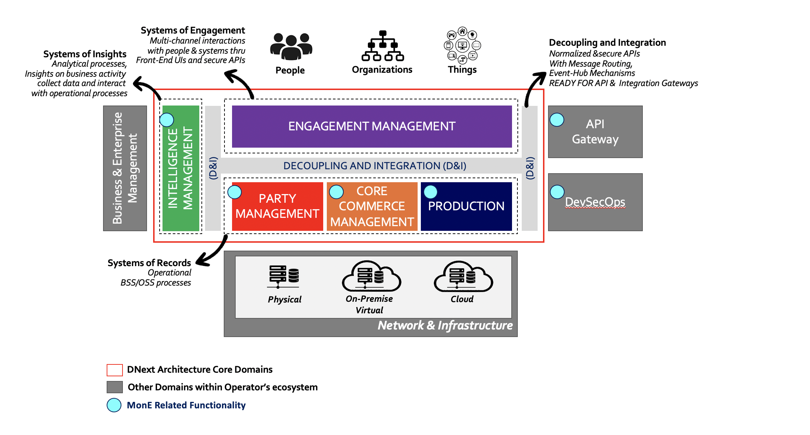

MonE and Open Digital Architecture (ODA)
This section first provides information regarding MonE design and ODA compliancy.
1. TMFORUM (ODA) Open Digital Architecture Overview
TMFORUM (ODA) Open Digital Architecture (Ref. [3]) offers an industry-agreed blueprint and common terminology providing pragmatic transformation paths from monolithic, legacy software solutions, towards scalable, cloud-based platforms that can be orchestrated with artificial intelligence driven analytics.
The following figure depicts the TMFORUM ODA High-Level Functional Architecture. For a high-level overview of ODA and MonE related functionality relevant to an area, please refer to the following sections.

Figure-1: MonE TMFORUM ODA
2. MonE TMFORUM-ODA Compliancy
MonE platform components provide BSS capabilities related to Charging, Billing and Revenue Management within TMFORUM ODA Canvas. The following diagram depicts MonE TMFORUM-ODA Compliancy considering eTOM functionality addressed in each ODA functional block within TMFORUM ODA Canvas. Referring to the diagram, the MonE marked related functionality indicate the relevant MonE Charging, Billing and Revenue Management functionality. Please note that this is a logical TMFORUM ODA aligned view. For a more detailed and actual list of MonE Charging, Billing and Integration API components, please refer to MonE L1 Architecture.

3. MonE TMFORUM-ODA Detailed
The following sections provide details about TMFORUM-ODA Functional Canvas, the role and responsibility of each functional block as per TMFORUM perspective and its relation to MonE provided functional capabilities.
3.1. Engagement Management
The engagement management components provide digital, graphical user interface experience and omni-channel capabilities. Within TMFORUM ODA, the common features and goals intrinsic to this functional domain can be characterized as the following:
- Engagement Management domain deals with "Experience" and "Presentment"
- Manage the presentation (UI-User Interface) layer according to the channel, the device to allow multi and omni-channel user journeys over multiple types of devices.
- Handle relationship between external and internal actors (people, organizations and things) and the underlying back-end functional blocks.
- Manage process driven overall experience; customer, user partner journeys, and tailor interactions using contextual information provided from back end components via open APIs.
- Being a presentation layer, hold no functions (functional Framework) and no operational data
- Interaction with underlying back-end blocks through standard TMFORUM Open/REST APIs meaning, process APIs and Event driven APIs
As a back-end system of records, MonE does not provide many substantial components in this functional block, except for the configuration Web UIs.
3.2. Party Management
This functional domain is mainly responsible for the management of organizations or individuals that are involved or likely to get involved with the enterprise (aka service provider) via one or more roles, such as partner, customer etc. Within TMFORUM ODA, the common features and goals intrinsic to this functional domain can be characterized as the following:
- Party Management domain deals with "WHO" & "WHY"
- Customer Management
- Billing Account Management
- Manage parties; Persons and Organizations
- Party Bill Inquiry Management
- Party Bill Payments and Receivables Management
- Manage party roles
- Manage all party related entity models; customer, account etc.
- Manage additional related supportive capabilities, such as Document Management, Identity Access Management
MonE Public APIs working in harmony with MonE back-end charging and billing components provide the related Billing and Revenue management capabilities in this domain.
3.3. Core Commerce Management
This functional block is mainly responsible for realizing core commercial business models, sales, order fulfillment, revenue generation and related assurance processes. Within TMFORUM ODA, the common features and goals intrinsic to this functional domain can be characterized as the following:
- Core Commerce Management deals with "WHAT"
- Manage Commercial Product Catalog
- Manage Core Commerce related process orchestration, entity models, create, read, modification and delete functionalities as well as persistence and retrieval of information to and from database management systems, such as Order Capture or Product Inventory
- Manage Core Commerce related to Billing and Revenue Management: Charge calculation, discounts, bill calculation, revenue recognition, journalization of revenues etc.
- Manage additional related supportive capabilities, such as Case Management, Agreement Management etc.
MonE Public APIs working in harmony with MonE back-end charging and billing components provide the related Billing and Revenue management capabilities in this domain.
3.4. Production
The scope of the Production block includes the exposure of its service capability definitions and the dynamic run-time decision of how the service(s) supporting Products and Customer will be created, delivered, used, maintained, assured, and repaired. Within TMFORUM ODA, the common features and goals intrinsic to this functional domain can be characterized as the following:
- Production deals with the activation and realization, meaning "HOW"
- Manage Technical Catalog: Services, Resources
- Manage Balances
- Manage Core Technical Fulfillment/Activation related process orchestration, entity models, create, read, modification and delete functionalities as well as persistence and retrieval of information to and from database management systems, such as Service Orders, Service Inventory
MonE Public APIs working in harmony with MonE back-end charging and billing components provide the related Billing and Revenue management (especially balance management) capabilities in this domain.
3.5. Decoupling and Integration (D&I)
The Decoupling & Integration (D&I) domain is a conceptual block within TMFORUM ODA Architecture about governing and managing separation of functional borders based on well-established "families" of closely interrelated services as well as the integration between them. Where in traditional architectures functional layers are supposed to communicate only with adjacent ones (e.g. BSS with OSS, OSS with Network but not BSS directly with Network). "Decoupling" within MonE ODA compliant architecture emphasizes that ODA Function Blocks are not behaving like layers and tightly coupled together. This ensures that the functional architecture by itself doesn't preclude any combination of services.
In this regards, open APIs provided by MonE components consider the following:
- Normalized APIs: Catalog of API's - Management of API catalog and documentations.
- Message Routing: API Routing - Capability to dynamically Route API calls to endpoint are supported by MonE provided open APIs
3.6. Intelligence Management
Even though, MonE is NOT an intelligence or knowledge management platform, MonE components provide out-of-the-box capabilities with Information Streams to feed next generation Knowledge Systems embedded with Artificial Intelligence, Machine Learning and Predictive Analytics features.
From an analytical perspective, all MonE platform components emit process, operational and transactional statistic information to Intelligence Management systems making it possible for the service provider to execute appropriate business, process and operational correlations and aggregations that yield a representation of business and operational reality.
For details, please refer to Intelligence and Actionable Analytics.
4. Other Domains
For the sake of completeness from an overall end to end enterprise architectural functional blocks perspective, this section provides information with regards to other domains considering Service Provider's ecosystem.
4.1. Business and Enterprise Management
Enterprises need to manage themselves and this domain represents these common functions are quite generic across many industry sectors and are not peculiar to the communication industry and service providers. Some examples of these are:
- HR/People Management
- Financial Management
- Revenue Assurance Management
- Security management
- Knowledge Management: Within Knowledge Management the service providers have very specific and challenging needs that directly utilizes on the capabilities and analytical information provided by Intelligence Management.
4.2. API Gateway
In real-life scenarios, as-is BSS/OSS ecosystem of service operators will mandate integration between MonE components and one or more legacy systems over proprietary APIs. Thus, pollution of the overall enterprise integration architecture due to such proprietary external dependencies are avoided.
4.3. DevSecOps
A cloud-native next generation platform cannot ignore DevOps. In this regards, MonE lifecycle management and support considers security incorporated DevOps practices. In this regards, the following set of practices and processes are considered considering MonE software development, security validation and IT operational aspects:
- Software Change and Config Management
- Continuous Unit Tests
- Automated Testing
- Continuous inspection of development artifacts considering vulnerability, security hot-spots viewpoints
- Automation and Orchestration considering packaging, container build, application lifecycle management and container platform cluster management
4.4. Network and Infrastructure
For the sake of completeness, this domain represents the network and infrastructure resources of the operator. Impacts of network function virtualization, IoT, Edge computing, 5G network slicing has triggered the need for a radical change in the way networks and services are managed and orchestrated. The services and resources controlled by the Production Management domain will be realized on this infrastructure domain.
The pivotal deployment of IOT, 5G (with network slicing) related infrastructure blended with virtualization technologies and Edge computing has triggered the need for a radical change in the way service operators must standardize and manage an orchestrated infrastructure of networks and services. ETSI ZSM group (Zero-touch network and Service Management) is working on enabling zero-touch automation within the Production that is related to Infrastructure Deployment and Operations management.